真駒内にある日本屈指の超絶霊園。
実に9年ぶりの再訪である（以前の訪問記は
こちら）
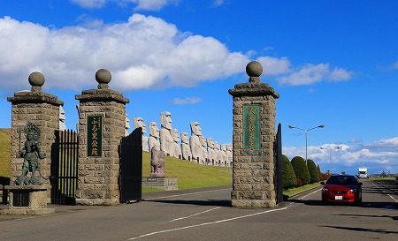
入り口には相変わらず巨大なモアイ像が鎮座している。
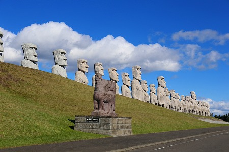
これ見るとザ、北海道！って感じがします（かなり偏った感想であることは俺も判ってっからいちいち指摘しないでいいかんね！）。
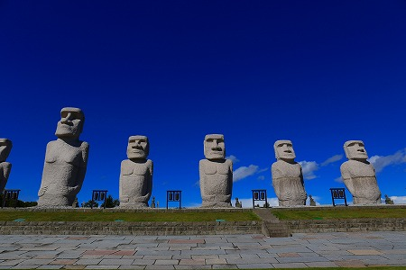
今回再訪したのはここにある大仏さんが
妙なことになっているという噂を聞きつけたからなのだ。
確かに霊園内の様子はかなり変わっている。
以前はモアイ像のすぐ向かいにあったストーンヘンジが遥か先に移動しているし、その先にあった観音像などはなくなっている。
そして何よりも変わったのは大仏さんだ。
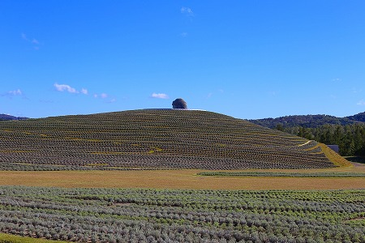
以前は大理石が敷き詰められた広場に鎮座していた大仏さんが
埋め立てられてしまっているではないか！
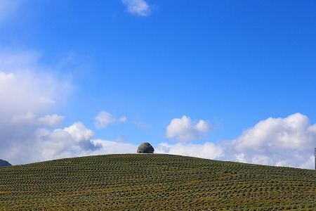
これはどうしたことか！
遠くから見たら頭だけがチョコンと見えている！
どした！大仏さん！誰かに埋められちゃったのか？
真相を確かめに大仏さんに向かう。
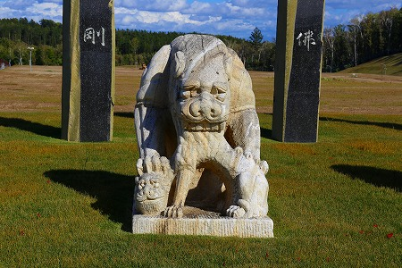
妙なオブジェにビビりつつ、目的は大仏さんの安否確認也。
むむむ。
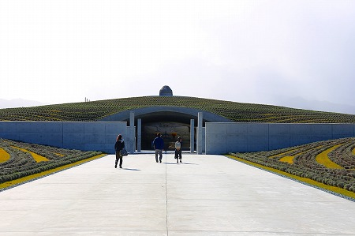
大仏さんは盛り土の中に鎮座しているようだ。
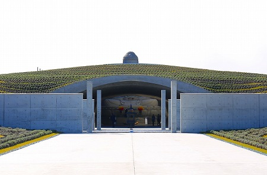
ああ、胴体が見えて一安心。
埋められちゃった訳じゃないんだね。
大船観音みたいに胴体が埋められちゃったのかと思ったよ(嘘）。
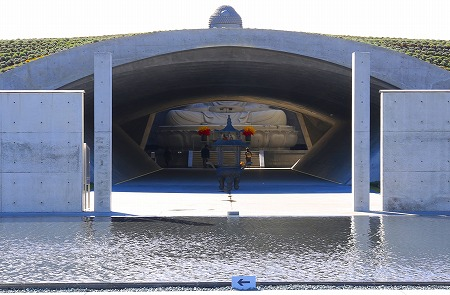
これは頭大仏殿といい、かつて露座だった大仏の周囲をこんもりと覆った、というわけ。
正直言って何でそんなことをするのか、良く分からないが、もしかしたら積雪期でも参拝できるように、という親切心なのかもしれない。
いや、だったら完全にドームにすればいいのに何で大仏さんの部分だけ覆わないんだろう。
設計は安藤忠雄大先生。言わずと知れた日本を代表する建築家である。
ちなみに盛り土に植えられているのはラベンダー。
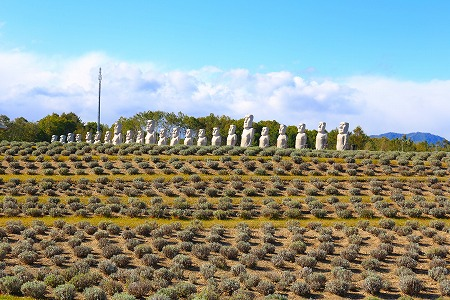
花が咲けばさぞかし見事な景色になるのだろうよ。
因みにこの日は10月とは思えないほど猛烈に寒かった。
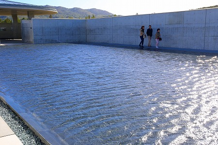
強い風に張ってある水も波うっていた。
さらに霙のような雪のようなものがチラチラする始末。ガチで寒かった…。
池の脇には大仏さんが覆われていくヒストリーが写真展示されている。
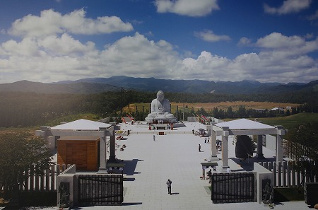
↑かつての大仏さん。
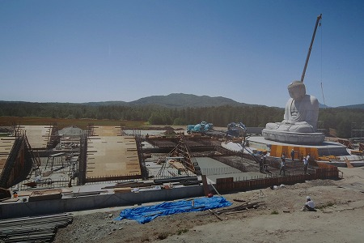
↑周囲の施設が解体されていく。
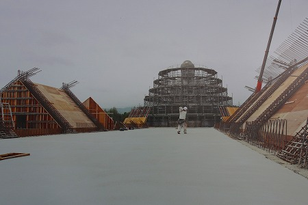
↑大仏さんの周りに足場が組まれていく。
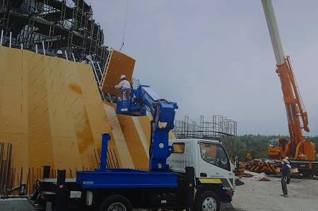
↑そしてコンパネで覆われていく。
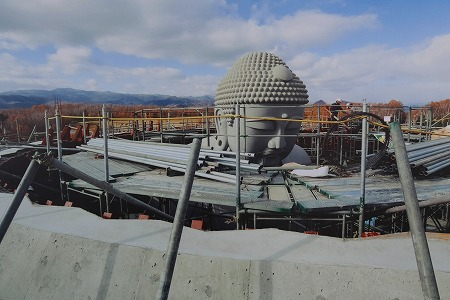
↑包囲された大仏さん。
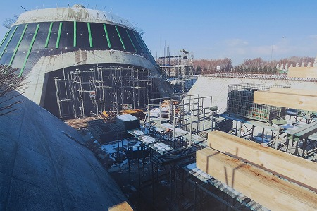
↑何だか造船所のようだ。
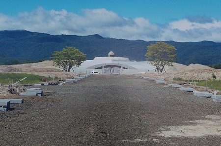
↑そうしてコンクリに覆われていく大仏。
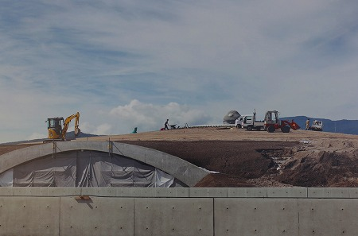
↑最後は土盛りして完成。
…正直に言うとこの頭大仏殿プロジェクト、個人的にはあまり良い計画とは思えなかった。
ホトケサマの偉大さを表現するためにわざわざ巨大な仏像を建立した訳ですよね？それを覆いこむとは却って大仏を矮小化する行為としか思えない。
それに大仏さんの頭だけが見えるというコンセプト自体、大仏を軽く扱っているような印象しか感じない。
偉い建築家先生にプロジェクトを託し、さも滝野霊園、増々発展してますよ！的なポーズをアピールするためにしているなら安藤大先生にも失礼だろう。
ま、安藤大先生に関しては俺は嫌いだからどうでもいいけど。
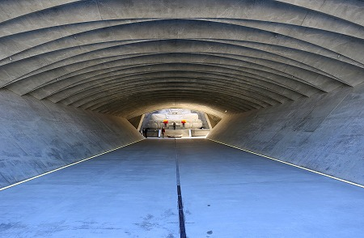
盛り土の内側は安藤センセお得意のコンクリ打ちっぱなし。
屋根は盛り土の負荷を分散させるべくシェル構造になっている。
うむ、上手いじゃないか…。
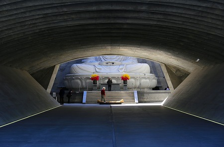
さらに進むと大仏さんが見えてくる。
なかなかドラマティックな展開じゃないか…。
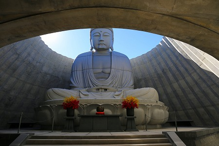
して、大仏さんとの久しぶりの邂逅。
ご無沙汰しております。随分狭苦しいところに押し込められましたね、心中お察しします！
と、そこに陽の光が差し込んできた！ビカー！
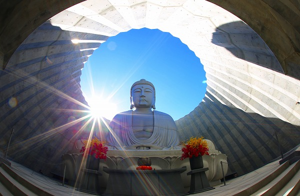
ううううううう、チョット、良いじゃないの！
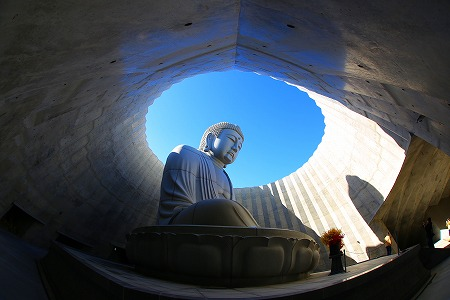
まるでロケットの発射孔みたいで、このまま大仏さんが空に向かって発射していきそうだぞ！
か、かなり、カッコイイじゃないか…！
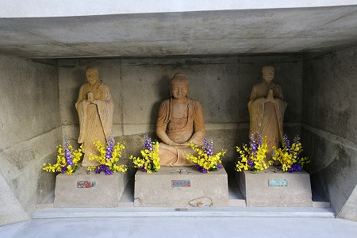
壁面にはかつてストーンヘンジの真ん中に鎮座していた仏像群が祀られている。
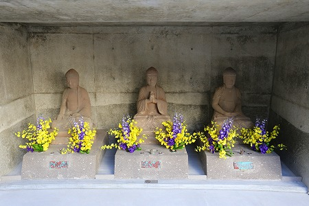
ストーンヘンジの中にあるよりは…いいよね。
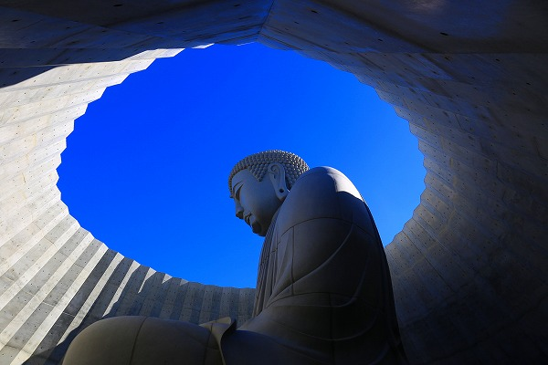
きゃいーん！
結局いろいろ文句垂れつつも、大仏舎弟としてはそこに大仏があれば、無条件にひれ伏するしかないのですよ。
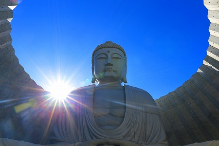
嗚呼、やっぱカッコイイです。
諸々文句を吐き散らしてスミマセンでした。ヘソ曲がりな小生がバカでした…。
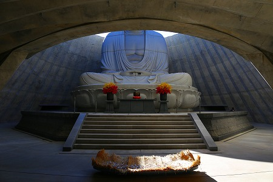
大仏の前には賽銭箱の代わりに筵がひかれていた。
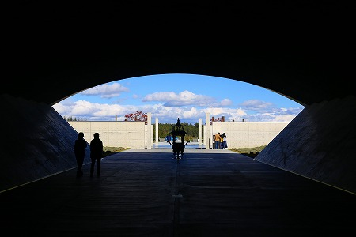
大仏さんの威徳もだけど、北海道の寒さが身に染みた日でございました…。
因みに奥にある従来の霊園エリアはあまり変化はありませんでいた。金閣寺がなくなっていた位かな。